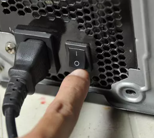
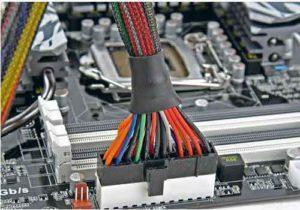

 Вы собрали ПК, всё подключили, жмёте кнопку питания, а он не подаёт признаков жизни? Без паники! Первое что стоит проверить это тумблер блока питания. Да, иногда даже опытные сборщики могут забыть щёлкнуть тумблером БП, и в этом нет ничего страшного.
 Если же БП включен, а система всё равно не стартует, следует проверить подключение питания, возможно какой то коннектор вставлен не до конца или вы вовсе забыли подключить его. Если у вас есть другой блок питания, например от вашего старого компа, и он совместим с вашей материнкой можно подключить его и посмотреть как система себя поведёт, возможно вам попался бракованный БП.
Так же следует проверить корректность подключения передней панели, особенно кнопки питания (power sw).
Ещё один распространённый сценарий - это когда система стартует, всё работает, но вот изображения нет. Данная проблема обычно решается достаточно просто. Но прежде вы должны ещё раз проверить на официальном сайте производителя материнки - поддерживает ли она ваш процессор. Если нет, придётся прошивать биос. Если же вы абсолютно уверены что проц поддерживается, то стоит воспользоваться методом "передёргивания оперативки". Вам нужно отключить ПК от электросети и поменять местами модули памяти. Запускаем и смотрим. Если не помогло, проделываем то же самое, но теперь пробуем запуститься на одном модуле, не заработало? Тогда на другом. Обычно после таких манипуляций изображение появляется, можно ставить обы модуля назад и всё будет работать.
В случае если предыдущий метод вам не помог, можно попробовать завестись на встроенной графике, если она присутствует в вашем процессоре. Возможно, проблема в видеокарте, если это так то обратитесь в магазин по гарантии.
При возможности можно попробовать стартануть с заведомо рабочей оперативкой или видеокартой от другого ПК.
Если ни один из вышеперечисленных методов вам не помог, вы можете оставить заявку на помощь и мы обязательно решим вашу проблему.